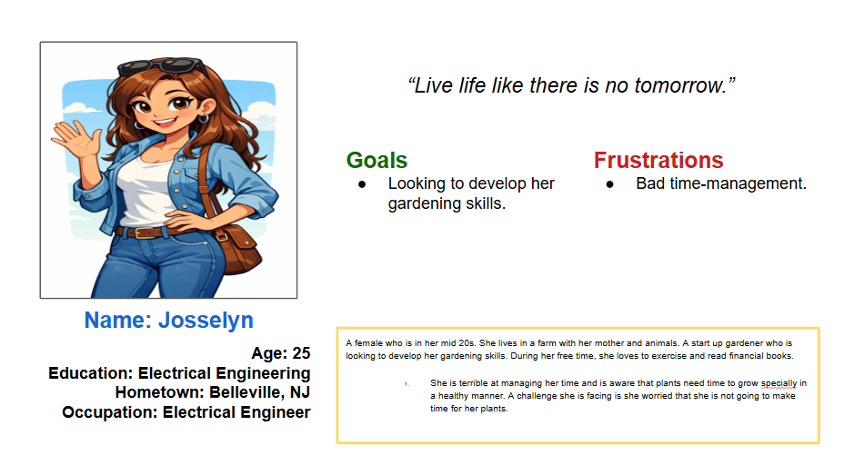
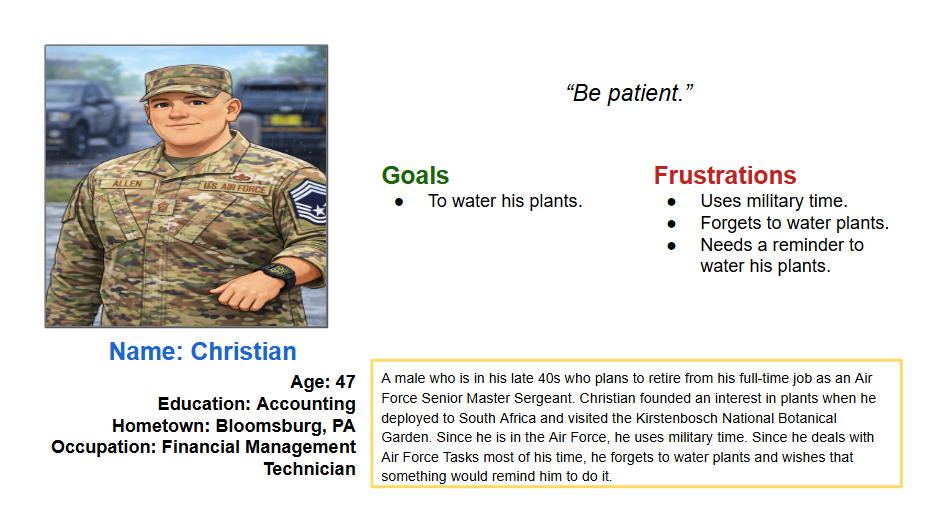
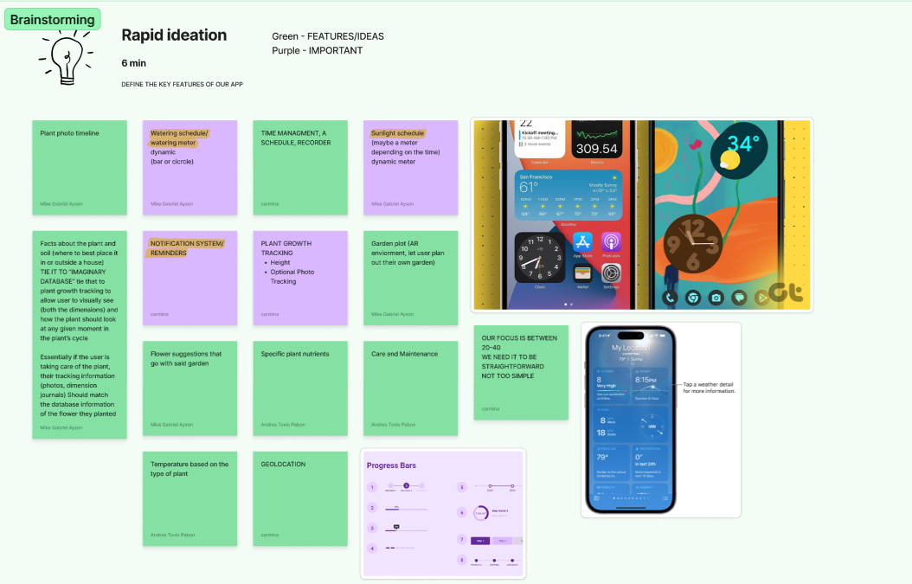
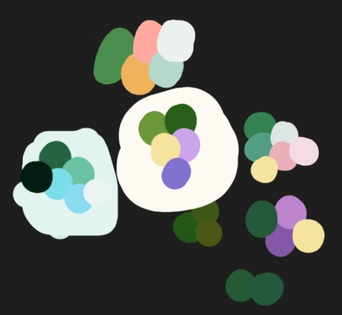
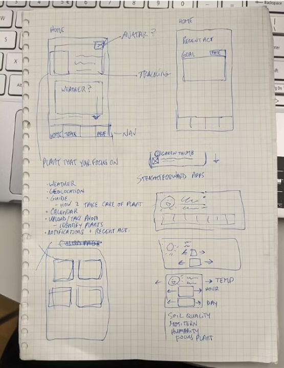
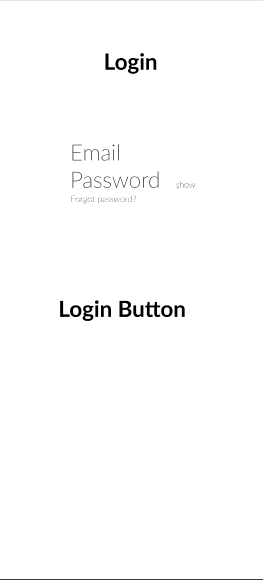
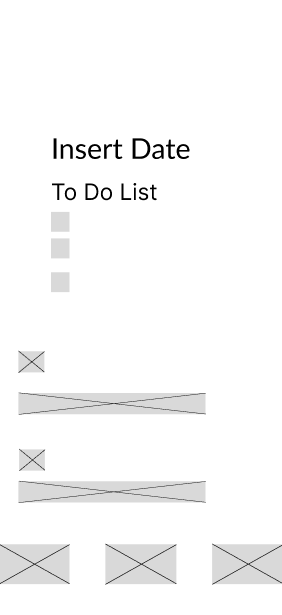
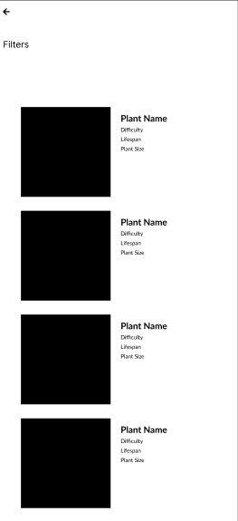
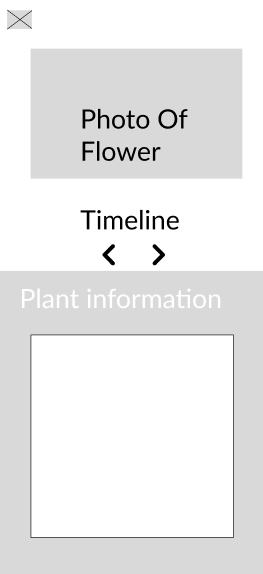
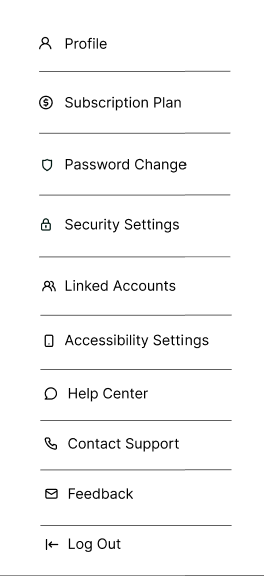

Case Study
This project targeted plant growers who may or may not have a plan for growing and maintaining healthy plants. TrackzPlanty was created to allow plant owners to access resources for plant-growing guidance. It includes features such as water schedule, journal, and weather insights.
Some plant owners may have difficulties maintaining the health of their plants, and some may not have a strategic plan to take care of them. This causes frustration because they spent money and time on plants they expected to keep healthy, but did not know how. This can turn into never purchasing a plant again due to fear of killing another plant.
TrackzPlanty is an educational and tracking app. Users will have the option to learn about the plant they would like to grow and take care for. The world will become a better place when people are more educated on how to take care of nature and benefit all life on Earth.



With the personas created, we then did rapid ideation and brainstormed the key features of our app. We divided the work and noted that whatever feature is in purple should be a higher priority in comparison of the green, which should be less of a priority but would be nice to include. This approach helped us make intentional design decisions, balance scope, and avoid feature overload while still leaving room for future expansion. By the end of this phase, we had a clear feature hierarchy and a shared understanding of what needed to be designed first versus what could be iterated on later.
A competitor is Planta. This app focuses on a daily routine for the growth of plants. While TrackzPlanty has this feature, it is important to take notes on certain procedures a user does to keep their plants healthy.

The team focused on targeting colors that resemble plants and nature. It mostly has variations of green, as we thought that it is main nature color.

We started by creating basic sketches of low-fidelity wireframes in an attempt to determine the overall user experience of the mobile application and the position of the key features that we intended to incorporate into the final product. The sketches were rich in annotations that highlighted different aspects of the design of the mobile application.





We then converted the low-fidelity wireframes into digital wifremares. We were able to see consistency and hierarchy much better in a more flexible yet realistic setting by finishing this phase. We were able to establish the foundation for high-fidelity by analyzing each feature of the digital visuals.
My participation in this project allowed me to develop my design thinking and also to learn to solve problems through the users' eyes. During the whole process, NJIT UX design professors and UX design experts gave our team so much insightful feedback that it not only challenged our assumptions but also allowed us to make more informed decisions. I was able to improve my skills in the communication of design concepts, taking criticism, and working with others during my one of my first UI/UX design project. The success of the project as well as the personal development I have achieved through working on this project (for example, having completed many parts of it from beginning to end) are my two main takeaway points. The experience gained from this project will have a positive effect on my future work in UI/UX design as I continue to apply all I have learned through this project regarding constructive collaboration and design principles.
This was my first design hackathon I've participated in. What I could've done differently was to communicate in advance with my teammates, as I didn't have much experience working on UI/UX Design projects. Also, I should have asked for advice in advance from a NJIT professor or professionals, so I could have had a different approach. Either way, I am satisfied with the outcome, and I know that there is room for improvement, such as typography in the UI aspect and conducting more research, such as interviews in the UX aspect.